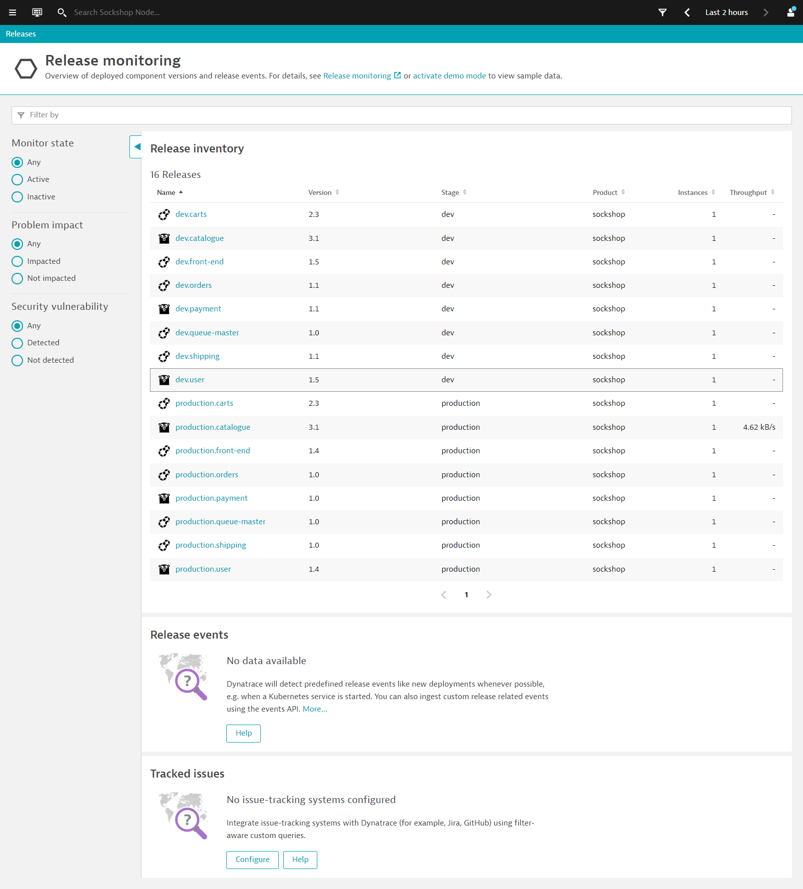

This repository contains the hands on for the Day 2 Operations - Cloud Native Observability Workshop.
Prerequisites
- Dynatrace SaaS/Managed Account. Get your free SaaS trial here.
- AWS account, with the ability to create an EC2 instance from a public AMI. Signup to a free trial here.
- Chrome Browser
- SSH client such as mobaxterm.
Lab Setup
The following steps are used for this lab:
- Sample Application
- Sample App is based on Sockshop
What You'll Learn
- Deploy OneAgent to a Kubernetes / Microservice Environment
- GitOps / Monitoring as code approach to push application config
- Learn Metric Ingestion for automated baselines across all entities
- Site Reliability Engineering - Service Level Objectives
- Site Reliability Engineering - Releases
In this exercise, we will deploy the OneAgent to a Linux instance running Kubernetes(Microk8s) and let the OneAgent discover what is running in that instance.
Using Terminal via Web Browser
To faciliate the labs, we will access the Linux instance via terminal through a web browser.
Use the URL was provided in your email to access the SSH terminal. Make sure the URL looks like Public IP Address:8080/wetty
Use the login name and password as provided in your email.

Download the OneAgent
Open your browser and access the Dynatrace URL.
Follow these steps below:
- Select Dynatrace Hub from the navigation menu.
- Select Kubernetes
- Select Monitor Kubernetes button from the bottom right.

Within the Monitor Kubernetes / Openshift page, follow these steps below:
- Enter a Name for the connection Eg.
k8s - Click on Create tokens to create PaaS and API tokens with appropriate permissions
- Toggle ON Skip SSL Certificate Check
- Click Copy button to copy the commands.
- Paste the command into your terminal window and execute it.

Example:
Connecting to github-releases.githubusercontent.com (github-releases.githubusercontent.com)|185.199.108.154|:443... connected.
HTTP request sent, awaiting response... 200 OK
Length: 7310 (7.1K) [application/octet-stream]
Saving to: ‘install.sh'
install.sh 100%[=====================================================>] 7.14K --.-KB/s in 0s
2021-06-01 05:46:36 (40.7 MB/s) - ‘install.sh' saved [7310/7310]
Check for token scopes...
Check if cluster already exists...
Creating Dynatrace namespace...
Applying Dynatrace Operator...
Warning: apiextensions.k8s.io/v1beta1 CustomResourceDefinition is deprecated in v1.16+, unavailable in v1.22+; use apiextensions.k8s.io/v1 CustomResourceDefinition
customresourcedefinition.apiextensions.k8s.io/dynakubes.dynatrace.com created
serviceaccount/dynatrace-dynakube-oneagent created
serviceaccount/dynatrace-dynakube-oneagent-unprivileged created
serviceaccount/dynatrace-kubernetes-monitoring created
serviceaccount/dynatrace-operator created
serviceaccount/dynatrace-routing created
podsecuritypolicy.policy/dynatrace-dynakube-oneagent created
podsecuritypolicy.policy/dynatrace-dynakube-oneagent-unprivileged created
podsecuritypolicy.policy/dynatrace-kubernetes-monitoring created
podsecuritypolicy.policy/dynatrace-operator created
podsecuritypolicy.policy/dynatrace-routing created
role.rbac.authorization.k8s.io/dynatrace-dynakube-oneagent created
role.rbac.authorization.k8s.io/dynatrace-dynakube-oneagent-unprivileged created
role.rbac.authorization.k8s.io/dynatrace-kubernetes-monitoring created
role.rbac.authorization.k8s.io/dynatrace-operator created
role.rbac.authorization.k8s.io/dynatrace-routing created
clusterrole.rbac.authorization.k8s.io/dynatrace-kubernetes-monitoring created
clusterrole.rbac.authorization.k8s.io/dynatrace-operator created
rolebinding.rbac.authorization.k8s.io/dynatrace-dynakube-oneagent created
rolebinding.rbac.authorization.k8s.io/dynatrace-dynakube-oneagent-unprivileged created
rolebinding.rbac.authorization.k8s.io/dynatrace-kubernetes-monitoring created
rolebinding.rbac.authorization.k8s.io/dynatrace-operator created
rolebinding.rbac.authorization.k8s.io/dynatrace-routing created
clusterrolebinding.rbac.authorization.k8s.io/dynatrace-kubernetes-monitoring created
clusterrolebinding.rbac.authorization.k8s.io/dynatrace-operator created
deployment.apps/dynatrace-operator created
W0601 05:46:39.025776 29593 helpers.go:553] --dry-run is deprecated and can be replaced with --dry-run=client.
secret/dynakube configured
Applying DynaKube CustomResource...
dynakube.dynatrace.com/dynakube created
Adding cluster to Dynatrace...
Kubernetes monitoring successfully setup.
$
Validate the installation in Deployment status
Click on Show deployment status to check the status of the connected host.
You should be able to see a connected host as per the image below.

Restart Sockshop application
To restart the sample app Sockshop execute the following command:
kubectl delete po --all -n dev
kubectl delete po --all -n production
Explore the Sockshop Application
Within Dynatrace, follow the steps below to get Sockshop URL:
- Click on the hostname in the OneAgent deployment screen.
- Expand Properties and tag in Host view
- Select and Copy Public Host name from the metadata
- Amend the Public Host name to match the following format:
- Sockshop Production
http://production.front-end.PUBLIC-IP.nip.io/ - Sockshop Dev
http://dev.front-end.PUBLIC-IP.nip.io
- Sockshop Production
Explore the Smartscape
While waiting for Easy Travel to start, you can explore Dynatrace and using the Smartscape, Dynatrace will automatically discover the processes and dependencies that comprises the Easy Travel application!
4 things that you will love about Dynatrace!

In this exercise, we will automate configuration of Dynatrace environment.
Using Dynatrace Monitoring as Code (Monaco), you can automate the configuration of all global Dynatrace environments without human intervention. Various use cases include:
- Having the ability to templatize our configuration for reusability across multiple environments
- Interdependencies between configurations should be handled without keeping track of unique identifiers
- Introducing the capability to easily apply – and update – the same configuration to hundreds of Dynatrace environments as well as being able to roll out to specific environments
- Identify an easy way to promote application specific configurations from one environment to another – following their deployments from development, to hardening to production.
- Support all the mechanisms and best-practices of git-based workflows such as pull requests, merging and approvals
- Configurations should be easily promoted from one environment to another following their deployment from development to hardening to production
To faciliate the session, you can run the monaco code with the below:
./deploy-monaco.sh
After setting it up, configure the DT_TENANT and DT_API_TOKEN and DT_DASHBOARD_OWNER variables. These can be found within the lab registration email.
export DT_TENANT= https://mou612.managed-sprint.dynalabs.io/e/<ENV>
export DT_API_TOKEN=dt0c01.IH6********************************************
export DT_DASHBOARD_OWNER=<your email address>
After setting up, run the following command to configure Dynatrace:
./push-monaco.sh
Below are the configurations done:
- Synthetic monitoring
- Service naming rules
- Carts SLO
- Application definitions
- Dashboards
- Process naming rules
- Management zones
In this exercise, we will cover the setting up Service Level Objectives (SLO). These objectives are based on a target of our measured Service Level Indicators (SLI) to fulfill the business's Service Level Agreement (SLA).
Creating SLO
On the left nav, go to Service level objectives > Add new SLO
We will be creating a SLO for Sockshop Frontend. Use the following:
- Name this SLO:
Sockshop Frontend Error SLO - Select tab Calculate success rate using two metrics
- Under numerator dropdown, use
builtin:service.errors.server.successCount - Click on the selected field - number of calls without server side errors
- Under denominator dropdown, use
builtin:service.requestCount.server - Click on the selected field - Request count - server
- Click on Next
- Under Entity selector, use
type("SERVICE"),tag("[Kubernetes]tier:frontend"),tag("[Kubernetes]stage:prod") - Click on Preview
- You should have selected 1 entityID with Display Name front-end.production
- Click on Next
- Use default thresholds for Failure, Warning and Good
- Use
-1hunder Timeframe - Click on Save

Creating metrics for Catalogue page
Next, we will be creating a custom metric for successful requests count to Catalogue page
- On the left nav, go to
Transactions and services - Click on
front-endservice - Click on View dynamic requests
- Scroll down and with /catelogue request, select the graph icon (Create analysis view)
- Under Metric downdrop, select Successful request count
- Click on Create metric
- Under Metric name, use
cataloguesuccesscount - Click on Create metric

- Under Metric downdrop, change and select request count
- Click on Create metric
- Under Metric name, use
cataloguecount - Click on Create metric

Creating SLO for Catalogue Availability
- Name this SLO:
Catalogue Availability SLO - Select tab Calculate success rate using two metrics
- Under numerator dropdown, use
calc:service.cataloguesuccesscount - Click on the selected field - Catalogue Success Count
- Under denominator dropdown, use
calc:service.cataloguecount - Click on the selected field - Catalogue Count
- Click on Next
- Click on Next
- Use
85for Failure - Use
90for Warning - Use
-15munder Timeframe - Click on Save
Refer to the left navigation bar and go to Dashboards. Dynatrace has now prebuilt dashboard templates such as Kubernetes Dashboards and Real User Monitoring dashboards.
As part of the Monaco rollout, you should also see dashboards created such as Environment Overview Dashboard and Prometheus - Environment Overview Dashboard

Drill down into each of these dashboards and explore the various dashboard widgets for App Owners and Business Users.

Adding a SLO widget
We will now add a new SLO widget based on the new SLO we've created.
On the left nav, go to Service level objectives
You can use the pin icon to pin the dashboard to Environment Overview Dashboard
Dynatrace also offers a built-in release-analysis solution that helps you determine the versions or stages of your deployed applications.
On the left nav, go to Releases

This provides an overview of deployed component versions and their release events.
Drilling into each component, you will find additional metadata from the respective component. This provides context to the monitored component as well as information regarding it's lifecycle and tracking issues.

We hope you enjoyed this lab and found it useful. We would love your feedback!